PEDIDOS HOTELES
PROVEEDORES/ USUARIOS Y CONTRASEÑAS: Planilla Unica
INTERFAZ Y CONTACTOS TOUROPERADORES
Hoteles con Pago en Atrápalo
Hoteles con Convenio directo (Pago Atrápalo)
Localizador TTO va a empezar con CD/HC
¿Qué se debe hacer?
Chequear si se envió al hotel la reserva: En Información de envío de notificaciones que tiene que estar el mail del hotel
Chequear si se envió la confirmación al pax
Hoteles integrados (Pago Atrápalo)
Localizador TTO va a empezar con dos letras referidas al nombre del proveedor
¿Qué se debe hacer?
Chequear si tengo TTO, en ese caso ir a la web del proveedor y chequear que efectivamente esté la reserva
¿Qué hacer si no tengo TTO? ⇒
Identificar si el admin tiene cobro o no
Verificar realmente si no se reservó en la web del proveedor, muchas veces por error no tiene TTO pero si se realiza la reserva. Adjuntar en attachments el comprobante de que se hizo la búsqueda en el proveedor con los nombres de los pasajeros.
Identificar cual es la neta
Si tengo diferente monto entre EUR /EUR (cortesia) debo tomar el más barato
Debo tener en cuenta:
Tipos de pasajeros y tipo de habitación seleccionada por el pax
Debe ser MENOR o IGUAL AL NETO, nunca puede exceder el monto que figura el precio PVP
Debo buscar en mínimo 3 proveedores para comparar cual es el que menor NETA tiene:
Por ejemplo:
Busco en Restel tiene buenos precios, usarlo como 1ra opción, 2da World2Meet, 3ro WelcomeBeds
Debo dejar en los comentarios del admin los distintos netos que tenía cada proveedor, para demostrar que busqué en varios y opté por el más económico.
Buscar la misma disponibilidad por la web del proveedor
¿Qué pasa si no consigo la misma tarifa?
⇒CAMBIA LA NETA
Si es superior ⇒ *Ver proceso de ventas
Saco el tipo de cambio que me está dando el proveedor
Multiplico el nuevo precio del neto para saber cuantos pesos pasarle al pasajero
Tengo el precio en NETA en USD /EUR: Cómo saco cuanto le tengo que cobrar en PESOS como PVP. ¿Cuál es la cuenta para nacionales y cuál para internacionales? (VER SI HAY IMPUESTOS QUE DEBAN AGREGARSE)
Lo mejor para estos casos es editar el neto del admin desde la opción "cambiar NETO CON cambio de PVP", de esta manera te calcula cuál es el nuevo precio de venta a cobrar al cliente (ajustando también nuestra comisión).
Hoteles con Pago al hotel:
Expedia / Booking
Siempre se carga la tarjeta del pasajero en los casos de pago al hotel.
Si es una reserva de hotel Booking, para ver la reserva en proveedor te pide un pin, el cual tenemos que buscar en Admin de localizador, lo buscamos en la solapa Estado del pedido según el proveedor que se encuentra debajo del item LOGS DE TRANSACCIÓN, debemos ampliar dónde está el signo + y nos va a abrir un mensaje, como el que adjunto en la imagen, ahí debemos hacer en el teclado CTRL + F y nos abre un recuadro donde debemos escribir PIN , a darle enter nos va a llevar directamente a donde dice pin y vamos a poder ver los 4 dígitos.
⚠⚠ LA RESERVAS DE HOTELES NUNCA SE CAEN SOLAS. ⚠⚠⚠⚠⚠⚠
CANCELACIÓN= SIEMPRE APRETAR CANCELAR PEDIDO EN ADMIN Y DESPUÉS ENTRAR A LA PÁGINA EL PROVEEDOR QUE ESTÉ REALMENTE CANCELADO
⚠⚠ Ver en Detalle de la compra, si hay algún fee de turismo que tiene que pagar directamente en el hotel para informar al pax.
Hoteles dentro de Argentina
(VER QUE COMISIÓN DEBERÍAMOS CARGARLE, HAY QUE PEDIR LIQUIDACIÓN? HAY QUE CUADRAR? HAY QUE MANDAR A WALTER PARA PAGAR?
⇒ My Beds
⇒ Amichi
Ir a la web de Proveedor para ver tarifas
Sumarle la comisión que aparece en planilla única
Sumarle un 6% de gastos de gestión para cubrirnos
En Amichi Si está en verde es confirmación inmediata, puedo tomar la reserva desde la web
Gestión de hoteles
CONFIRMADOS / PENDIENTE PROVEEDOR :
Primero validar si tiene TTO o si no tiene TTO pero que igual este confirmado por el proveedor.
Al cliente le llega un email donde se le indica que el cobro fue realizado con éxito pero que se encuentra pendiente de confirmación. ¡Es importante que se vea si o si en el día, ya que no podemos mantener el cobro de un pax por más de 1 día! Importante: el pax debe saber que si bien está cobrado, está sujeto a disponibilidad al momento de reservarlo.
Pago Atrapalo: Se debe devolver por ADMIN
Pago al Hotel: No debemos realizar ninguna gestión, lo devuelve el hotel
PENDIENTE / PENDIENTE COBRO . Pedidos que entran tanto pendiente de reserva y de cobro Son las solicitudes con ingresos a menos de 30 días próximos. Por una cuestión de seguridad, nunca entran cobrados ni reservados, y el estado de carrito ingresa como “forzar compra pendiente”. 1ro hacer Anti Estafa (AE) y marcarlo como OK o como estafa evitada.
PENDIENTE / RESERVADO. Pedidos que entran reservados y falta el cobro (es cuando pax elige la opción “pago con transferencia” desde la web. )
Se verificará en la celda del “localizador TTO” que ya hay un número de reserva del proveedor; por ende lo único que hay que hacer es seguimiento a que el pax abone antes de la fecha límite que llega por email; y sobre todo es importante hacer el seguimiento para que no entre en gastos
Hay que llamar al pax para consultar si va a pagar
¿Cuándo ingresa en gastos?
Observaciones importantes:
Siempre que se cancele un pedido o se confirme desde admin, es importante chequear en proveedor que esté realmente ok la opción que hicimos, es decir, que esté efectivamente reservado o cancelado segun corresponda. Muchas veces no sincroniza el admin con la plataforma del proveedor.
También podemos identificar si la acción fue realizada bien en Log de Acciones:
Cuando se ingresa o se toma un hotel por hotelbeds(24) y lo cobran,luego se debe apretar el botón ACTUALIZAR ESTADO,para que pase a Vendido. Sólo pasa con este proveedor
VENDIDO / TAG: seguro pendiente de contratación. Pedidos que entran vendidos ok , normalmente son pago al hotel; pero el importe por seguro/asistencia viene rechazado, por lo que hay que primero tratar de cobrarlo si estan todos los datos en admin; si da rechazada nuevamente hay que contactar a pax para cobrarselo; y sino hay rta de pax, hay que dejarle informado que el seguro no pudo ser contratado porque el pago vino rechazado. ESTO HAY QUE HACERLO EL MISMO DIA QUE ENTRA EL PEDIDO.
-------------------------------------------------------------------------------------------------------------------------------------
CANCELADO / CANCELADO ATRAPALO.
Filtro Últimos 12 meses - Cancelado / Cancelado Atrapalo - excluir tag queja.
Ver en Blog de acciones quien canceló el pedido, en base a esto, hay que ver si en el proveedor está cancelado el pedido para que no entre en gastos.
Ver si tiene el pedido tiene cobro o no, para devolver al pax
Ver si en el proveedor tiene reserva
Dejar comentarios y cargo tag QUEJA para que luego no salte mas ese localizador. (VER CON DALILA PORQUE NINOSKA NO SABE EL USO DEL TAG QUEJA)
HOTELES CONTRATACION DIRECTA (CD)
Son los hoteles que tenemos contratación directa desde Atrápalo. No hay una plataforma donde buscar las opciones; esta sincronizado el admin con el hotel.
Primero AE lo verifica si lo requiere y luego, directamente se tiene que cobrar, una vez cobrado, el admin pasa a “confirmado” y se debe hacer click en “confirmar nuevo pedido” . De esa manera se genera el TTO con el mismo número de localizador (ya que es reserva directa) y el admin pasa a vendido. (SIGUEN ENTRANDO ESTOS TIPOS DE PEDIDOS??? QUE HAY QUE HACER? HAY QUE ENVIARLE EL MAIL DE CONFIRMACIÓN AL HOTEL O AL PAX??? NINOSKA NO ESTÁ SEGURA QUE SIGA EXISTIENDO)
El paso siguiente es verificar que se haya disparado el mail con los vouchers a pax y con la confirmacion al hotel (siempre, por las dudas, actualizar el admin y ver que no quede en error el envio). Sino se envio, hacer click en “generar mail de confirmación”
Cualquier gestión de cambio fecha o solicitud hay que realizar la consulta al proveedor
Cuando un servicio de paquete VJ o Crucero entra todo cobrado por admin,
es decir en estado Confirmado, debe ser trabajado por nuestro sector.
Nosotros vamos a verificar que el servicio este correcto en proveedor,
chequear que el cobro este correcto, confirmar, cuadrar y garantizar la
reserva, y enviar los vouchers a los pax.
CUADRE VJ AMICHI
El admin trae una sola linea con nuestra ganancia incluida, por ende
tenemos que hacer el desglose correspondiente a la liquidacion que nos
envian
Esta es la reserva que tomaremos de ejemplo :
https://admin.atrapalo.com/viajes/?pg=compra&id_compra=72947763
Primero cargamos una línea con el importe exento
Luego cargamos el importe total de IVA 21 %(se suman el IVA y el Gravado
IVA)
Luego cargamos el importe total de IVA 10,50 % (se suman el IVA y el
Gravado IVA)
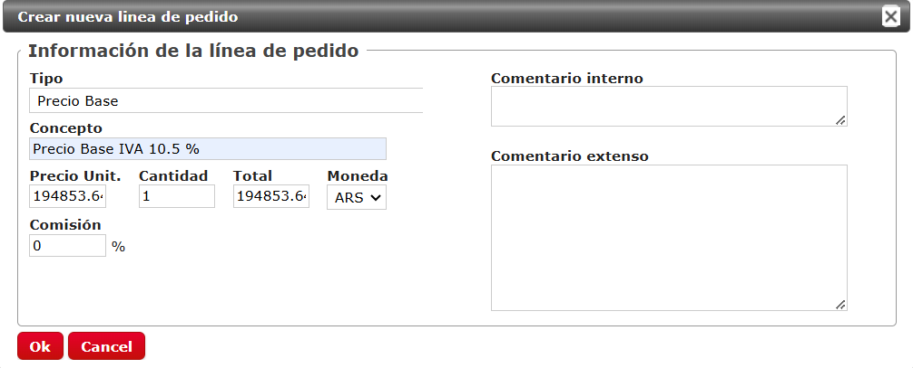
Una vez cargadas esas líneas, eliminaremos la linea inicial del admin.
Ahora podemos verificar que el importe que quedó como total es el mismo
total de la liquidacion.
Como el admin ya esta todo cobrado, la caja va a figurar con un importe
a devolver. Esta seria nuestra ganancia y se carga como gastos de
gestión.
Este sería el cuadre final del admin.
Para finalizar el proceso, debemos pasar a Vendido el admin y enviar los
vouchers a pax por Fd, dejando en comentarios el detalle.
MSC CRUCEROS
En el caso de la naviera MSC, los pasos a seguir son los siguientes:
Verificamos con el tto cargado en admin que el servicio sea el
correcto.
Validamos el cobro en decidir y pegamos comentario de la confirmación
del mismo
Realizamos el cuadre del pedido dejando comentario del tipo de cambio
del dia
Sacamos el pago al proveedor mediante nuestra administración
Solicitamos datos faltantes a pax
Enviamos vouchers
El tipo de cambio en este caso lo muestra la misma web de MSC
El admin de ejemplo es CR76147725
El pedido ingresa con varias lineas que hay que ajustar para desglosar
nuestra ganancia
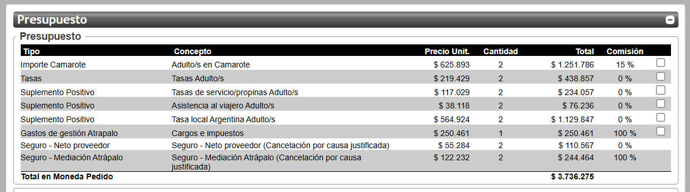
Iremos haciendo el cálculo de cada línea teniendo en cuenta la
liquidación descargada de la web de MSC
Primero modificamos el Importe Camarote. Hay que tener
en cuenta el % de comisión
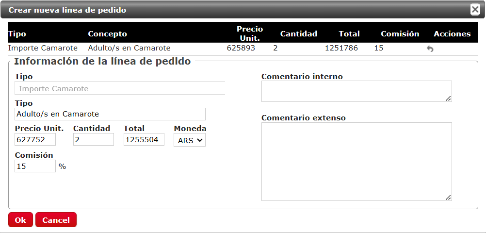
Una vez que guardamos los cambios, el admin muestra la linea modificada
al final.
Hay que refrescar el admin para poder seguir con el cuadre de las demas
lineas.
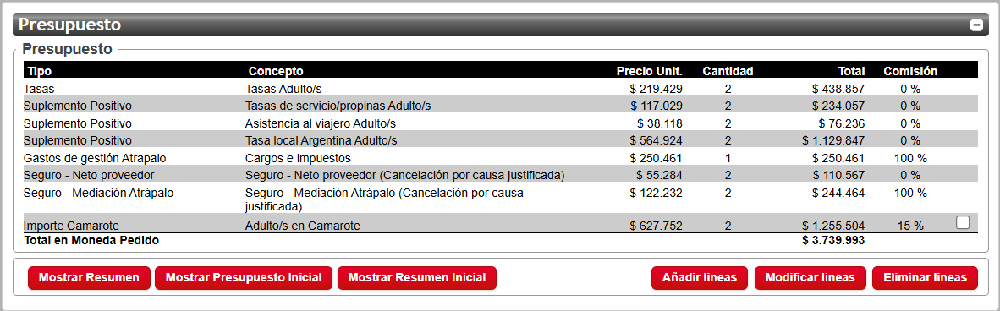
Modificamos las Tasas del servicio
Modificamos Las propinas si las trae incluidas
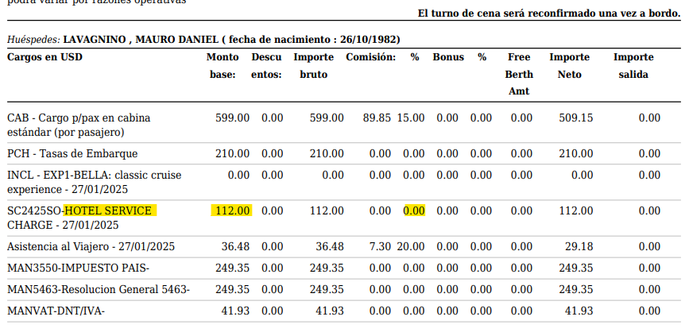
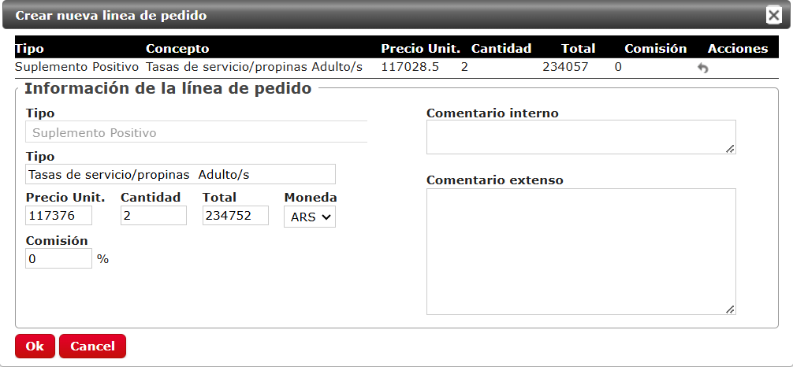
Modificamos la Asistencia al viajero
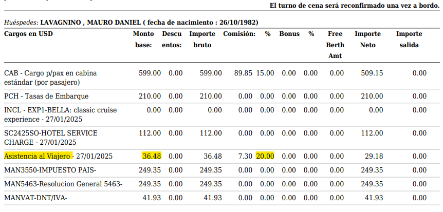
Modificamos las Tasas e impuestos locales
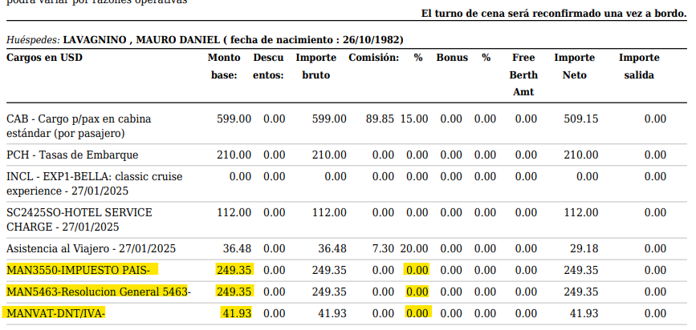
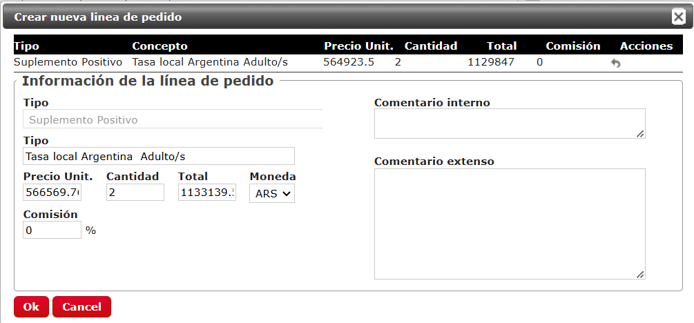
Eliminamos la linea de Gastos que viene cargada.
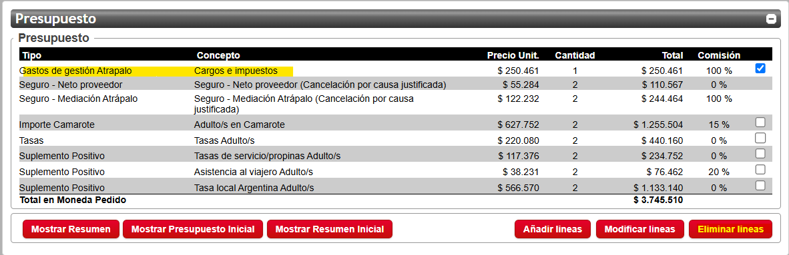
Finalmente el admin mostrará el total neto de la reserva (si hay seguros
como en este caso se suman al total). Asi comprobamos que el cuadre sea
correcto.
IMPORTE A PAGAR USD 2996.20 X $1048 = $3.140.017,6 + SEGUROS - TOTAL
$3.495.048,6
Como el admin ya esta todo cobrado, la caja va a figurar con un importe
a devolver. Esta seria nuestra ganancia y se carga como gastos de
gestión.
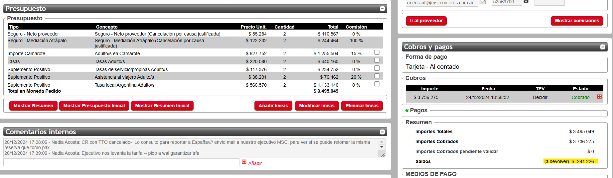
Este sería el cuadre final del admin.
COSTA CRUCEROS
En el caso de la naviera COSTA, los pasos a seguir son los siguientes:
Verificamos con el tto cargado en admin que el servicio sea el
correcto en la web de Costa. (Datos en plani única)
Validamos el cobro en decidir y pegamos comentario de la confirmación
del mismo
Descargamos la liquidación y adjuntamos en admin.
Tener en cuenta al momento de descargar el archivo clickear el boton
"Abrir comisión"
Realizamos el cuadre del pedido dejando comentario del tipo de cambio
del dia
El tipo de cambio que usamos es el que brinda Costa en el apartado
Pagos.
El admin de ejemplo para el cuadre es CR76268139
El pedido ingresa con varias lineas que hay que ajustar para desglosar
nuestra ganancia
Iremos haciendo el cálculo de cada línea teniendo en cuenta la
liquidación descargada
Primero modificamos el Importe Camarote. Hay que tener
en cuenta el % de comisión
Modificamos las Tasas del servicio
En el caso de Costa hay que sumar las tasas registradas por cabina
Modificamos la Asistencia al viajero
Eliminamos las tasas que vienen cargadas en admin
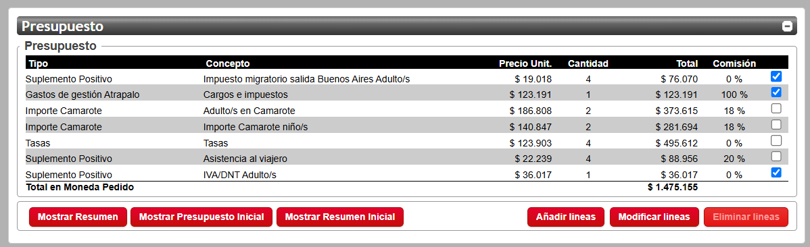
Modificamos las Tasas e impuestos locales
Estas tasas estan indicadas al final de la liquidacion y aplican por el total de la misma
Tambien se hace la suma y se carga bajo el concepto Tasas locales argentinas
Finalmente el admin mostrará el total neto de la reserva . Asi comprobamos que el cuadre sea
correcto.
IMPORTE A PAGAR USD 1295.55 X $1059 = $1.371.987,45
Como el admin ya esta todo cobrado, la caja va a figurar con un importe
a devolver. Esta seria nuestra ganancia y se carga como gastos de
gestión.
Este sería el cuadre final del admin.
Sacamos el pago al proveedor mediante nuestra administración
Es decir mandamos un mail a Walter con el asunto SACAR PAGO CR76268139
y el detalle del TC y VTO de la rva
Solicitamos datos faltantes a pax. Dejamos comentarios de FD en admin.
Hacemos seguimiento hasta obtener datos y cargarlos en la web para
poder descargar los vouchers
Pasos para uso de la asistencia:
Verificar que tipo de asistencia tiene:
ONLINE / Experiencia mejorada (Lo ofrece cuando el pax compra un vuelo)
No tiene VJ
Póliza es el localizador sin la V
El pasajero encontrará las condiciones generales para utilizar la asistencia en Mi Reserva
Todos los países, el pasajero y ustedes pueden ver que contrato, reenviarlo y desde las mismas condiciones como debe avanzar. Todo está en condiciones
Si pax desea hacer uso de la misma, antes - durante o post su viaje , en el mail que le llega de condiciones tiene toda la explicación y el detalle de su cobertura.
La gestión es personal del pasajero con europ Assistance
Agente de sac, si el pax quiere hacer uso de la asistencia, previo a su viaje, debe siempre , agente de sac, avanzar a cxl los servicios si el pax lo requiere, informar las políticas de los servicios y se le debe enviar la carta membretada y factura para que presente a Europ Assistance y comience su trámite de reembolso, en el caso que le incluya su contrato
La empresa que presta el servicio sigue siendo Europ Assistance, aunque lo hayas comprado por medio de Atrápalo
¿Quién gestiona el reclamo?
Europ Assistance es quien procesa y resuelve el reclamo, ya que ellos son los proveedores del servicio.
La agencia de viajes simplemente vendió la póliza, pero no se encarga de la atención ni de los reembolsos. Eso es 100% responsabilidad de Europ Assistance y del pasajero que lea las condiciones y tenga todo lo necesario para la misma
¿Qué hacer en caso de una emergencia o si necesitás usar la cobertura?
Contactá a Europ Assistance:
Usá el número de emergencia que aparece en tu voucher.
Ellos te van a indicar cómo proceder (hospitales cercanos, pasos para reembolso, etc.)
La agencia puede ayudarte con dudas, pero:
No gestiona autorizaciones médicas
No paga reembolsos
No se responsabiliza por rechazos de cobertura
Si Pax ya verificó las condiciones, procedemos a cancelar su reserva para que pueda pedir el reembolso
“Como agencia, nuestro rol es gestionar la cancelación de los servicios adquiridos y aplicar las penalidades correspondientes según las condiciones de cada proveedor (aéreo, hotel, etc.).
En caso de contar con una asistencia al viajero o seguro, el reclamo por los gastos generados por la cancelación debe realizarlo usted directamente con la empresa aseguradora. Nosotros como agencia no gestionamos esos trámites, pero sí le proporcionaremos la factura con el detalle de los importes abonados por penalidades, para que pueda presentar la documentación correspondiente a su cobertura.
no realizaremos ninguna cancelación sin su consentimiento expreso, ya que, por política de la plataforma Atrápalo, las devoluciones no se gestionan automáticamente. Por ello, le pedimos que nos confirme por este medio si desea que procedamos con la cancelación de su itinerario”
Una vez que pax confirma que no va a viajar eliminamos el itinerario de la reserva para que no caiga por NO SHOW
Enviar documentación de cancelación al pax
Pedirle la factura a Dalila
Pedir Carta membretada a Cintia y Ariel
https://agencias.europ-assistance.com.ar/#/auth/login
Paxs:
DNI:
TOTAL ARS (tkt sin fee/gastos de gestión atrapalo)
Numero de tkt
Fecha del vuelo :
Ruta:
PROCEDIMIENTO PARA CANCELAR UN SEGURO DESDE ADMIN
CANCELACIÓN DE SEGUROS:
**IMPORTANTE*** Todo admin que se cancela y cuenta con seguro SIEMPRE ir a la web de seguros para darlo de baja, sino después nos vendrá el cargo. NO se cancela automáticamente desde el admin.
luego de cancelarlo en la web de EA seguros, cancelar en el admin el seguro
Dar de alta/baja/modificaciones de pólizas manualmente:
http://apps.europ.es/TravelnetGC/alta.aspx
Usuario: 0018765
Password: ATRAPALO
En la pestaña de Asegurados, podemos seleccionar Alta, Modificación y Baja:
Altas: Si la creación de la póliza se hace con 24 horas posterior a la fecha de emisión el sistema no permitirá crearla y habrá que solicitarlo por email admin_ventas@europ-assistance.es
Modificaciones: Se permite modificar pasajeros / precio / referencia y fechas del viaje/evento. Otros casos puntuales hay que solicitarlos por email. admin_ventas@europ-assistance.es
Bajas/Desistimiento: Se pueden realizar bajas de todos los productos si la cancelación se produce en los 14 días desde la emisión de la póliza y no falte menos de un mes de la salida del viaje/evento. OJO! En la web del Seguro, nos permite cancelar estas pólizas aunque no cumpla con estos requisitos, pero luego hay que revisar que haya quedado correctamente cancelada, ya en ocasiones ha salido el mensaje de “póliza cancelada”, pero ha quedado confirmada porque no cumplía con estos requisitos.
No se podrá cancelar la póliza si tiene un expediente abierto con la aseguradora. En caso de que tengáis un cliente que pida cancelar el seguro (que no sea un void), antes que nada preguntarnos a capis y se verá de solicitarlo por email al comercial o os informaremos de cualquier otro procedimiento que se tenga que hacer. También podéis hacer la consulta al seguro por email admin_ventas@europ-assistance.es
Void/Cancelación en el mismo día en que se emite un seguro: se puede anular el mismo día en que se ha emitido el seguro a través de su interfaz, ya que no nos lo facturan. Tendréis que entrar a su interfaz y usar la opción “Baja”. Os aparecerá un mensaje:
“Se ha cancelado correctamente el Nº de reserva: 69132820 para el producto: 14I - ATRAPALO ANULACIÓN STOP OK”
DAR DE ALTA UN SEGURO
-Deberemos seleccionar el producto; el nº de reserva siempre será nuestro locata de la admin sin las letras
Luego deberemos rellenar los campos con las fechas del viaje, seleccionar tipo de cobertura (siempre es MUNDO); la modalidad (hotel, v+h, vuelos); nº de asegurados; importe total del viaje descontando el importe del seguro.
Después aparecen los campos para rellenar con los nombres de los pasajeros:
Dar a Guardar y continuar. Aparecerá el mensaje conforme se ha dado de alta la póliza. Deberéis copiar este mensaje en el pedido.
MODIFICAR UN SEGURO
-Deberemos seleccionar la opción de modificar, colocar el nº de locata nuestro sin las letras:
Os aparece esto, hay que darle al lápiz y saldrán los campos a modificar: precio, nombres, fechas, etc
Le damos a guardar los cambios y aparece el mensaje de modificación:
DAR DE BAJA UN SEGURO
-Deberemos seleccionar en el desplegable Baja de Asegurados, colocar el nº de locata:
Hay que clicar sobre la X y se anulará:
Aparece el mensaje de anulación de la póliza. Copiarlo en el pedido.
Por último, revisar que haya quedado correctamente cancelada la póliza!! Entrad a bajas nuevamente, poniendo el localizador, y os debería salir este mensaje:
En caso de que siga confirmada la póliza, se tendrá que consultar por email si es posible anularla admin_ventas@europ-assistance.es
CANJES
comunicación con cliente lo seguimos notificamos por FD
el asunto del mail diga lo siguiente:
Programa de Beneficios del Banco Provincia
Entro al link del banco
CANJES BANCOS
LINKS Bancos
COMAFI TIENDA
https://www.tiendacomafi.com.ar/RewardCliente_TiendaComafi/login.aspx?ReturnUrl=%2frewardcliente_tiendacomafi%2f
USUARIO atrapalo
CONTRASEÑA Atr2223*
ITAU
https://puntos.bmapremia.com.ar/RewardCliente_ItauArg/login.aspx
Usuario:
jrodriguez
Contraseña:
Juli2721*
COMAFI REWARDS
LINK COMAFI
Usuario:
jrodriguez
Contraseña:
Juli2721*
SUPERVILLE
LINK SUPERVILLE
Usuario:
rodriguez
Contraseña:
Loli1497
PROVINCIA
LINK PROVINCIA
Usuario
ATRAPALO
Contraseña
Provincia17
Los pendientes lo paso a la planilla de canjes Planilla Canjes
Automáticos: Generan Admin. SOLO VUELOS Y HOTELES
ITAÚ IUPP
COMAFI: REWARDS Y TIENDA
Cae el ADMIN con el texto Programa Puntos Externo
Emitir con forma de pago Cash
Pasarlo a vendido, cargar billetes
Mandar tkts por Fd porque tiene que salir sin precio
VER COMAFI TIENDA PENDIENTES DE CANJES:
ESTADO : SOLICITADO
-VER RECLAMOS: COMAFI REWARD Y TIENDA ( IDEM PROCESO)
Ir a Information center
aplicar filtro de fechas
ITAU /COMAFI
VUELOS: Puntos + Plata
Cargar un extramargen con el importe que necesito cobrar. Ya que siempre en ADMIN te figura que tiene ya pagado el total.
Se cobra por comercio atrapalo desde admin
Eliminar el extramargen
Devolver por transferencia la parte que cobré
Emitir cash
Manuales: NO generan admin
SUPERVILLE
PROVINCIA
ITAU SOLO CURSOS
COMAFI SOLO CURSOS
Procedimiento Provincia Net. → Dale click que están los manuales del provincia.
Ingresar diariamente en la web para gestionar y responder las consultas/reclamos derivados.
Recuerden que las respuestas deben ser claras y precisas, e incluyendo fechas en los casos que sean necesarios. Esas respuestas son las que leen los teleoperadores y las que reciben los clientes.
Incluimos los instructivos de las herramientas de gestión para que puedan repasar o por si los necesitan para capacitar a alguien más.
También los formularios de llamados para los proveedores de productos tangibles y el formulario de gestión para los vouchers, además el formulario de Solicitud de anulación y la guía de respuestas, que son las que se deben utilizar para responder las consultas y reclamos.
Importante:
Por favor no modificar el formato de los formularios. Cuando los envíen recuerden poner en él la fecha y vuestro nombre de proveedor . Ej.: Formulario de llamados/ gestión 01-11- proveedor // Solicitud de anulación 01-11- proveedor. Esto facilita mucho la gestión diaria.
Tengan presente que dentro de la Web figura la opción denominada GESTIÓN
Ese ítem fue creado con el objetivo de agilizar el circuito, unificar la tarea entre el Call, ustedes y nosotros dejando así un solo canal.
Les permite interactuar desde la misma Web frente a solicitudes de costo de envío, remitos o garantías, rectificación de datos, contacto telefónico con el cliente, responder consultas, o cualquier fase intermedia en instancias previas a la ejecución de un reclamo.
Admite que tanto ustedes como nosotros podamos solicitar y consultar de forma más directa. Se adjunta un Power con el instructivo de uso.
Les recordamos los reportes que enviamos:
Reporte de Alertas
Lunes: De haber reclamos/ consulta que no tuvieron resolución en la Web de Gestión en 10 días hábiles.
Reporte de Status ( estado de actualización de canjes en la Web Beneficios )
Martes: De haber canjes en estado En Distribución
Cursos
LInks Cursos
OXFORD LANGUAGE CLUB:
LINK OXFORD
Solicitar Vale Regalo
LINK VALE
Compartido códigos de acceso a cursos
LINK CODIGOS DE ACCESO
Hago una reserva en la web sin mail del pax y corporativa con código de seguridad incorrecto
Busco admin no finalizado
editar mail por el del pax
Pasar a cobrado por transferencia
Dejar comentario del canje
Pasar a Vendido
Asignarle el código de acceso del curso en la planilla canjes
Enviarle el mail al cliente con las instrucciones de cómo acceder al curso
Pasar a emitido desde rewards
Escapadas
Llamar al cliente para pedirle fecha y
Giftcard
Enviar a españa un formulario